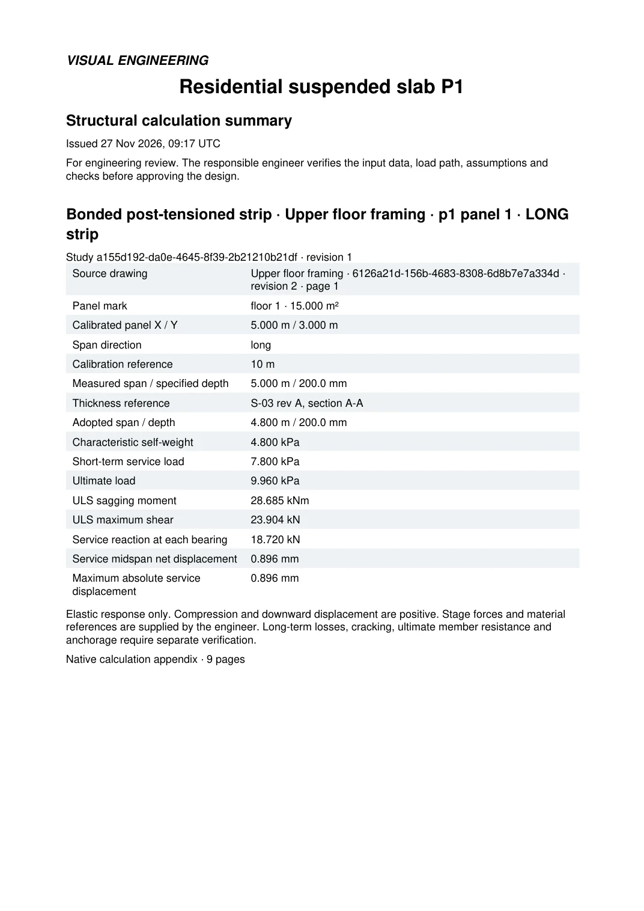

Suspended slab P1
Panel P1 measures 5 m by 3 m. Section A-A on training drawing S-03 specifies a 200 mm slab. The engineer adopts a 4.8 m effective span and a 1 m design strip along the long side.
Follow the signed concrete stresses at transfer and service. The report records the original drawing measurements, the adopted geometry and the assumptions used in the elastic calculation.
Loading the report…
